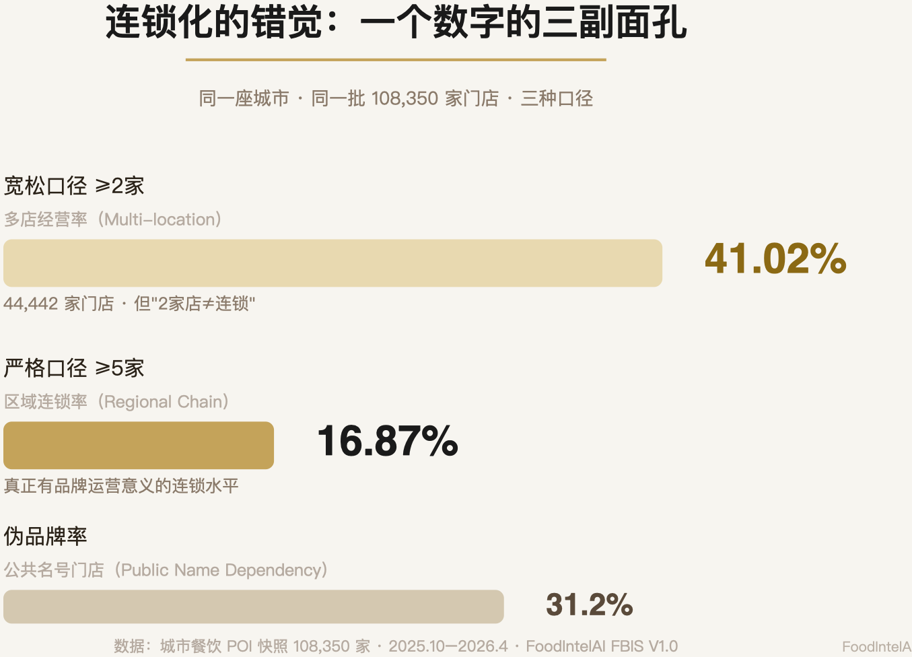
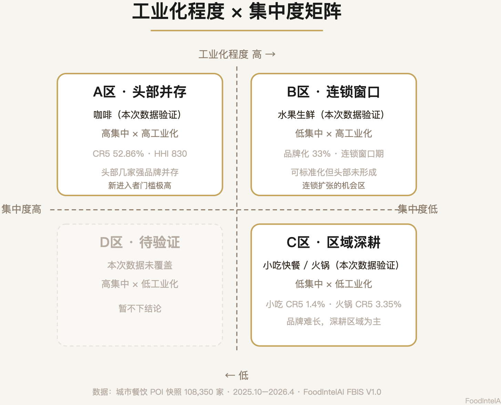
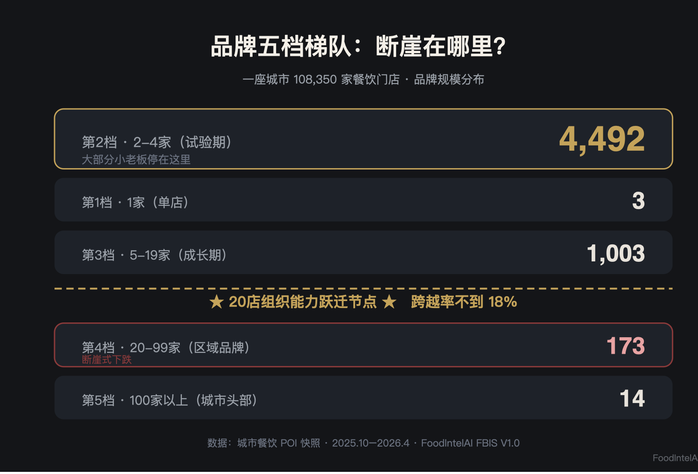

品牌只是冰山一角：一座城市 10.8 万家餐饮门店样本下的品牌扩张真相
在做分析之前，先回答一个最关键的问题：我们说的"连锁化率"，到底算的是什么？
如果把"一个品牌在城里开了 2 家店"就算连锁，那么按这个口径数出来的连锁门店数是 44,442 家，占全城门店的 41.02%——这个数字看起来很惊人，但我们在核对样本时发现它经不起推敲。
问题出在哪：2 家店不一定是连锁企业。
"≥2 家就算连锁"这个口径，统计的其实是"多店经营"，不是"连锁经营"。学术上前者叫 Multi-location Rate，后者才是 Chain Rate，两者不是一回事，混着用是这个行业里最常见的数字误导。
这篇文章的所有数字，都按修正后的口径来：2 家叫多店经营，5 家以上才开始算区域连锁，20 家以上才算大型连锁。 数据本身来自线上餐饮平台的门店 POI 快照，采集窗口为 2025 年 10 月至 2026 年 4 月，是一个半年期的横截面，不代表逐月变化趋势，这一点在文末数据说明里也会再交代一遍。
先说最重要的发现。
在这座城市 10.8 万家餐饮门店里，我们先把所有门店按"品牌属性"分成三类：
第一类：真品牌门店——有统一品牌、统一管理体系的连锁店。
第二类：公共名号门店——挂着"兰州拉面""沙县小吃""XX胡辣汤"这类招牌的店。这些不是连锁品牌，是很多个体户共用同一个地域名号。你以为它是品牌，其实每一家都是独立的店主——这个现象我们在拆解米线七大流派的时候就见过，只是这次把它量化到了一整座城市的门店结构里。
第三类：独立门店——就是"张记饺子馆""老王炒鸡"这种，一家店一个名，无品牌、无连锁。
这三层怎么分出来的，简化后的判定思路是这样：
这只是简化后给读者看的判定思路，实际规则库里还有更细的边界处理（比如同名但装修、菜单完全不同的情况怎么算），完整的品牌识别方法论我们计划单独整理成一篇方法说明，这里先把主干逻辑讲清楚。
三类门店的占比是：
| 类别 | 门店数 | 占比 |
|---|---|---|
| 独立门店（夫妻店/个体店） | 45,302 | 41.81% 🔵 |
| 公共名号门店 | 33,809 | 31.20% 🔵 |
| 真品牌门店 | 29,239 | 26.99% 🔵 |
三类识别基于规则词库和数据交叉判定，存在一定的边界误差（比如个别公共名号是否已经发展成真连锁，需要人工复核），但三类相加正好等于总样本 108,350 家，交叉验证没有出错，标 🔵 高置信。
这个城市真正的供给主体，不是品牌，是独立开店的店主——占了四成多。
如果算上公共名号门店，那么接近四分之三的门店其实都是个体经营。这就是城市餐饮的第一真相：供给是极度分散的，品牌只是冰山一角。
我们把"品牌"按门店规模分成五档，这是品牌的"成长阶梯"：
| 梯队 | 门店规模 | 含义 | 品牌数量 |
|---|---|---|---|
| 第1档 | 1 家 | 单店（独立经营） | 3 个 |
| 第2档 | 2–4 家 | 试验期（多店试试水） | 4,492 个 |
| 第3档 | 5–19 家 | 成长期（开始有管理） | 1,003 个 |
| 第4档 | 20–99 家 | 区域品牌（形成区域影响力） | 173 个 |
| 第5档 | 100 家以上 | 城市头部（成熟品牌） | 14 个 |
这个分布是理解餐饮行业的钥匙。
看第2档：4,492 个品牌开了 2-4 家店，说明大量店主尝试过开第二家、第三家店，但绝大多数停在了这个规模，平均下来每个品牌也就 2.4 家出头。
再看第3档到第4档：从 1,003 个骤降到 173 个——断崖式下跌。第5档更极端，全城只有 14 个品牌开到了 100 家以上。
5 家到 20 家之间，是一道巨大的鸿沟。我们把这个现象叫"20 店组织能力跃迁节点"——对大多数餐饮模型来说，开到 10-30 家这个区间，管理复杂度会指数级上升（供应链、培训、品控、财务全都要变），能跨过去的凤毛麟角。这一点我们会在第六节展开。
回到开头那个口径问题。我们用修正后的口径重新算一遍：
| 指标 | 口径（通俗版） | 门店占比 |
|---|---|---|
| 多店经营率（Multi-location Rate） | 品牌开了 ≥2 家店 | 26.98% 🔵 |
| 区域连锁率（Regional Chain Rate） | 品牌开了 ≥5 家店 | 16.87% 🔵 |
| 大型连锁率（Large Chain Rate） | 品牌开了 ≥20 家店 | 9.39% 🔵 |
细心的读者可能会问：真品牌门店占比是 26.99%，多店经营率是 26.98%，这俩数字几乎一样，是不是同一个东西算了两遍？不是——真品牌门店里，有 3 个品牌其实只开了 1 家店（第1档），把这 3 家单店品牌从"真品牌"里减掉，剩下的才是"开了 2 家以上"的多店经营门店，两个分母差的就是这 3 家，所以数字才会这么接近，属于口径上的巧合，不是重复计算。
但这里还有一层更值得说的地方：为什么"真品牌"里几乎找不到单店？不是算法把单店品牌过滤掉了，而是"能被识别为真品牌"这件事本身，就已经隐含了"大概率不止一家店"——一个品牌要被判定为有统一视觉、统一命名、加盟或直营特征，这些特征本身就要靠"重复出现"才能被观察到。一家刚开的单店，哪怕将来会做成大连锁，在这个时间切片里也几乎展现不出这些信号，自然更容易被归进"独立门店"而不是"真品牌"。换句话说，"真品牌"这个标签本身就带有"已经跑出规模"的隐含前提，单店品牌少不是统计巧合，是识别逻辑决定的。
41.02% 是"多店经营率"的幻觉。真正有品牌运营意义的"区域连锁率"只有 16.87%。
差距在哪？就是那 4,492 个"开了 2-4 家店"的小品牌——它们贡献了大量门店数，但它们是"多店"，不是"连锁"。
还有一个更扎心的指标：伪品牌率 31.2%（Public Name Dependency Rate）——挂着品牌一样的招牌，其实每一家都是独立个体户的门店占比。这就是"连锁化的谎言"：表面看 41% 是连锁，实际上真连锁（≥5家）只有 16.87%，挂名号装连锁的 31.2%，真正的独立店 41.81%。

这个数字放到全国大盘里看是什么水平？中国连锁经营协会发布的《2026中国餐饮连锁化发展白皮书》给出的数据是，全国餐饮连锁化率从2023年的21%逐年提升，2025年已经到了25%，年均提升大约2个百分点。需要提醒的是，全国口径通常沿用"≥2家即连锁"这种更宽松的统计惯例，跟我们这里"≥5家才算区域连锁"的严格口径不是同一把尺子——如果按同样宽松的口径比，本市的多店经营率 26.98% 其实略高于全国 25% 的平均水平；但如果按我们更严格的区域连锁口径看，16.87% 这个数字就明显偏保守。两种口径不能直接换算，这里只做方向性参照，不做精确对比，标 🟡 中置信，供参考。
我们再用一个"集中度"指标来看市场结构。
集中度算的是：行业里最头部的那几个品牌，占了多少市场份额。算法（通俗版）：把全城所有品牌按门店数从多到少排队，前 5 名门店数占全城门店的百分比是 CR5，前 10 名是 CR10，前 20 名是 CR20。
计算结果：
| 指标 | 门店占比 |
|---|---|
| 前 5 大品牌（CR5） | 1.85% 🔵 |
| 前 10 大品牌（CR10） | 2.46% 🔵 |
| 前 20 大品牌（CR20） | 3.38% 🔵 |
全城最大的 5 个餐饮品牌加起来，只占了 1.85% 的市场。这 5 个品牌本身画像很清楚：清一色是全国性连锁，覆盖品类集中在现制饮品和快餐两大标准化程度最高的赛道，单个品牌的门店数都在三位数以上——即便是这样的全国级选手，摆到一座城市 10.8 万家门店的盘子里，也只能吃下不到 2% 的份额（跟数据说明里的原则一致，具体品牌明细本文不展开）。产业经济学里常用的贝恩分类法一般是按 CR4 或 CR8 定级的，不是 CR5，我们这里借用它的思路做一个简化参照，不是严格的监管口径：大体上 CR4 超过 50% 才叫寡占市场，超过 20% 算头部集中。1.85% 这个量级，说明这座城市的餐饮市场几乎看不到任何集中的迹象。
还有一个更精细的指标叫 HHI（赫芬达尔指数），把每个品牌市场份额的平方加总，结果范围 0 到 10000，数字越大市场越垄断。国际上比较通行的判断区间（美国司法部反垄断审查指南的口径）大致是：低于 1500 算非集中市场，1500 到 2500 算中度集中，超过 2500 才算高度集中。
这座城市整体的 HHI 只有 1.36，跟"非集中"的下限 1500 比，差了三个数量级——碎片化程度确实极端。
这里要特别说明一句计算口径：经典的 HHI 门槛（1500/2500）是拿企业营业额或交易额的市场份额算出来的，我们这里用的是门店数量份额——门店数不等于市场份额，一个开了100家店但客单价低、翻台一般的品牌，未必比一个只开了30家但坪效很高的品牌更"占市场"。所以本文算出来的 HHI，准确地说是"城市品牌门店生态的集中度"，不是反垄断监管意义上、按营收口径算的"市场支配力集中度"。两者数值可以对照着看数量级，但不是同一个指标，不能划等号。
全城维度看是碎片化，但拆到品类维度，故事完全不同。我们把每个品类的连锁化率、集中度都算了一遍，发现品类之间差异巨大：
| 品类 | 门店数 | 品牌化占比 | CR5 | CR10 | HHI | 市场格局 |
|---|---|---|---|---|---|---|
| 咖啡 | 1,852 | 58.15% | 52.86% | 54.81% | 830 | 头部并存 |
| 水果生鲜 | 8,544 | 33.02% | 8.39% | 10.9% | 24 | 连锁窗口 |
| 小吃快餐（综合品类） | 38,135 | 24.09% | 1.4% | 2.4% | 1.31 | 区域深耕 |
| 火锅 | 6,241 | 19.66% | 3.35% | 4.49% | 4.06 | 区域深耕 |
| 小吃面食（细分：面食为主） | 1,985 | 0.2% 🟡 | 0.2% 🟡 | 0.2% 🟡 | 0.01 | 样本极小，仅供参考 |
先说明一下"小吃快餐"和"小吃面食"这两个名字：前者是包含快餐、简餐在内的综合大类，后者是从中单独拆出来、以面食为主的细分品类，两者统计范围互斥，没有重复计算。但"小吃面食"这一档的品牌化占比、CR5、CR10 三个数字完全相同，都是 0.2%——这大概率是因为该品类总样本量太小，多店品牌可能就一两个，指标本身波动很大，我们标了 🟡 中置信，建议单独复核，不作为结论性证据使用。
咖啡是最特殊的一个品类：品牌化占比 58%（全城最高），前 5 大品牌就占了 52.86% 的门店。但如果看 HHI，830 按国际标准其实还没到"中度集中"的 1500 这条线。这两个数字放在一起说明什么？我们算了一下，如果前 5 家份额完全均等分配，光这 5 家贡献的 HHI 理论上就该在 550 左右，实际的 830 意味着份额分布并不均匀，但也没有一家独大到形成垄断——咖啡赛道即便是全城品牌化程度最高的品类，头部也是几家强势品牌并存，不是单一巨头通吃。这是我们在这份数据里看到的一个比较意外的细节，值得单独拎出来说。
小吃快餐是另一个极端：38,135 家门店，全城第一大品类，但前 5 大品牌只占 1.4%，HHI 只有 1.31——无数个体户在各自的一亩三分地经营，谁也吃不下谁。
为什么咖啡能集中、小吃不能？因为工业化程度不同：咖啡产品标准化（一杯拿铁全国一个配方）、供应链成熟、资本推动，天生适合连锁；小吃标准化困难（每家店的配方都是独门秘方）、毛利低、人效低，天生难连锁。
我们把这个逻辑画成一个"工业化程度 × 集中度"的二维图，本次数据集里能直接验证的品类是咖啡、水果生鲜、小吃快餐、火锅这四个：

四个区里，A、B、C 三个区都能在本次数据里找到对应的实际品类，D 区（高集中 × 低工业化）目前样本里没有品类落在这个位置，暂时空着，不强行往里塞例子——判断一个品类能不能做连锁，先看它在哪个区，B 区是机会区，A 区是几强争霸的区。至于炸鸡、卤味这些我们在其他系列里单独验证过的品类，因为不在这次城市样本的统计口径里，这里就不放进图里比大小了，避免不同数据源硬拼在一张图上。
回到品牌梯队那张表，最震撼的数据是：从"5-19 家"到"20-99 家"，品牌数量从 1,003 个骤降到 173 个。
用通俗的话说：1000 多个品牌开到了十几家店，但只有 170 多个能跨过 20 家这个门槛，跨越比例不到 18%。这道坎放到品牌梯队里看会更直观：

20 家店，是餐饮品牌的组织能力跃迁节点：开 5 家店，老板自己管得过来，靠个人能力；开 10 家店，开始需要店长，靠流程；开 20 家店，供应链、培训体系、品控、财务全都要变成"系统"，靠组织。
绝大多数品牌，就是倒在了"从个人能力到组织能力"这道坎上。不同品类门槛的松紧程度也不一样：奶茶这类高标准化品类，20 家可能已经跑顺了；正餐这种非标品类，20 家可能才刚刚开始摸着石头过河。更准确的说法是：
最后看品牌是怎么"铺"到城市各区的。
我们计算了一个"品牌空间渗透"指标（通俗版）：看一个品牌的门店在城市的区县里覆盖了多广（覆盖率）、在每个区里开得有多密（密度）。根据覆盖和密度的组合，品牌分成三种扩张类型。下表用字母代指具体品牌——跟全文的原则一致，我们不针对任何具体企业做经营层面的点评，只呈现扩张模式本身：
| 类型 | 特征 | 代表 |
|---|---|---|
| 全域穿透型 | 全市各区都开，密度也高 | M 饮品（覆盖 66.7% 区县，平均每区 64 家） |
| 核心锁定型 | 只在核心商圈集中开，不往外扩 | J 地方菜 |
| 势能扩散型 | 先在核心区建立，再向外围扩张 | H 炒鸡 |
三种类型，三种扩张策略：全域穿透靠高密度占领全市，适合标准化程度高的品类；核心锁定守住最肥的核心商圈，适合客单价高、依赖地段的正餐；势能扩散是核心区先打样、势能够了再扩散，这是大多数品牌扩张的真实路径。
区域壁垒的本质是：一个品牌在一个区成功，不代表能在另一个区成功。每个区的消费结构、租金水平、竞争格局都不同，跨区扩张，等于换了一个战场。
回到开头的口径问题，把整篇文章的发现串起来看：
这座城市餐饮供给的主体是独立小店，不是品牌——独立店 41.81% 加上伪品牌店 31.2%，接近 73% 的门店都是个体经营。表面 41% 的"连锁化率"是口径造成的错觉，修正口径后，真正的区域连锁率只有 16.87%，跟同期全国大约 25% 的连锁化率（口径更宽松）比，差距不小。市场结构上，全城极度碎片化，前 5 大品牌只占 1.85%，HHI 仅 1.36，远低于国际通行标准里"非集中市场"1500 的门槛。品类之间的分化则很剧烈，咖啡赛道即便是几强并存也没有出现真正的垄断者，小吃快餐这个全城最大的品类几乎看不到任何集中的迹象，分化的根源在于工业化程度不同。20 家店是绝大多数品牌都跨不过去的门槛，从 5-19 家到 20-99 家，跨越比例不到 18%。而品牌往外扩张的时候，还要面对实打实的区域壁垒——全域穿透、核心锁定、势能扩散，三种路径对应三种完全不同的命运。
一个可能的观察角度是：这座城市餐饮市场呈现的更像是"名号化"而不是"品牌化"——大量个体户借着公共名号生存，表面繁荣，实则分散，这跟我们之前拆解米线七大流派时看到的地域公共名号问题是同一类现象，只是这次把它放大到了一整座城市的门店结构里。这种结构下，连锁品牌真正的机会不在全品类铺开，而在那些"可标准化但尚未被占领"的品类里——就像水果生鲜所处的"连锁窗口区"。
说到底，连锁化率不是一个孤立的数字，它是一座城市产业组织方式的映射——有多少生意是靠个人在扛，有多少是靠系统在跑，这个比例决定了这座城市的餐饮供给还要靠什么方式往前走。
1. 数据口径：本分析基于网络平台餐饮门店的线上 POI 数据（108,350 条），采集窗口为 2025 年 10 月至 2026 年 4 月，是这半年内的去重快照，"品牌节点""连锁率""集中度"等指标基于线上识别，不等同于工商注册主体、加盟合同数量或真实经营规模，用于观察市场结构趋势，不代表企业经营真实性评价，也不代表随时间变化的趋势。
2. 品牌识别：真品牌/公共名号/独立店三层分离采用规则词库加数据驱动识别，存在边界误差；公共名号类单独归类，不计入品牌统计。
3. 集中度指标：本文 CR、HHI 均按门店数量份额计算（不是企业营业额或交易额份额），HHI 取值范围 0-10000（非 0-1 小数形式）；文中引用的 CR、HHI 判断区间借用产业经济学的通用分析框架和国际反垄断审查惯例做参照，衡量的是"品牌门店生态集中度"，不是反垄断监管口径下按营收计算的"市场支配力集中度"，两者不能直接划等号。
4. 外部对标：全国连锁化率数据引用自中国连锁经营协会发布的《2026中国餐饮连锁化发展白皮书》，与本文口径存在宽严差异（全国口径通常按≥2家即连锁计算，本文区域连锁率按≥5家计算），仅作方向性参照，不做精确换算，标注 🟡 中置信。
5. 样本边界：线上 POI 样本不等于全量普查，覆盖率与采集源会影响统计结果；个别细分品类（如小吃面食）样本量较小，指标波动较大，已在正文中单独标注置信度。
6. 本报告为产业研究观察，不构成投资、经营或开店建议；具体品牌明细不展开，亦不针对任何具体企业。